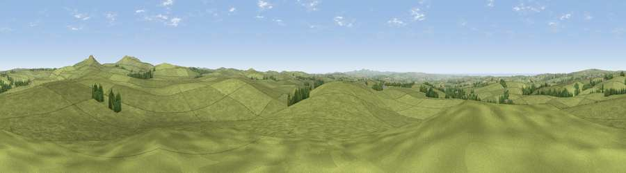

Alex Tor
#8544 in England · top 18% of its area beats it · near St. BrewardWhere it is
The exact computed spot (SX 11873 78726). Click the marker for map links.
The view, rendered

A 360° render of this exact spot computed from the terrain model, tree cover and land cover — summer colours, afternoon light, calibrated against photographs of famous viewpoints. Real trees, hedges and buildings will differ in detail.
The panorama
Grey silhouette: terrain skyline in each direction (720 bearings, Earth curvature and refraction included). Dashed green: skyline with trees (+15 m) and buildings (+8 m) as obstacles. Blue strip: how far the ground is visible on each bearing.
Where the view opens
Wedge length = distance to the farthest visible ground on that bearing (vegetation-aware). Rings at 10, 25 and 50 km.
What fills the view
95% grassland · 2% woodland · 1% cropland ·
Angular shares of the visible panorama (visual magnitude), not map area. Landscape diversity 0.11 (0–1 Shannon).
Key numbers
More beautiful places nearby
The staircase of upgrades: each row has a higher view potential than everything closer. Driving times are estimates from straight-line distance, calibrated against real road routing — check an actual route before setting out.
| Place | Direction | Drive | Score |
|---|---|---|---|
| Viewpoint near St. Breward | SW · 3 km | ~8 min | 65.7 |
| Rough Tor | NE · 3 km | ~8 min | 76.5 |
| Brown Willy | ENE · 4 km | ~10 min | 77.3 |
| Viewpoint near Treligga | WNW · 9 km | ~17 min | 79.3 |
| Viewpoint near Port Isaac | W · 9 km | ~18 min | 79.7 |
| Viewpoint near Boscastle | NNW · 11 km | ~21 min | 82.0 |
| Viewpoint near Boscastle | NNW · 11 km | ~21 min | 84.3 |
| Viewpoint near Boscastle | NNW · 11 km | ~21 min | 85.2 |
50.57790, -4.65846 · source: osm peak · position refined by local search. Computed location — check access rights before visiting.